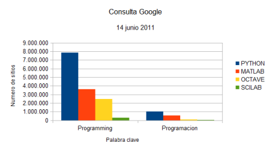

Esta obra esta protegida bajo una licencia de creative commons
Universidad de Panamá
2018
El ordenador o computador es una máquina multifuncional; podemos atrevernos a decir que se puede programar para realizar cualquier tipo de actividades aún tan complejas como las que realiza un ser humano, basta sólo con adicionarles los elementos sensores y motrices apropiados. Los ROBOTS son un ejemplo ya real en el desarrollo tecnológico de los computadores; ya se presentan muchos videos demostrando sus habilidades tales como los de las referencias (YouTube, 2011a; YouTube 2011b; YouTube 2011c). Sin embargo, es más lo que la ciencia ficción ha mostrado que lo que se ha logrado.
Para lograr que el computador realice una tarea determinada, debemos programarlo, o conseguir una aplicación específica que realice esa tarea, por ejemplo, si sólo queremos escribir un documento con unas cuantas imágenes, basta usar lo que conocemos como procesador de texto y realizar la tarea que necesitamos. Así, podemos hacer una primera clasificación de herramientas de computador:
Las aplicaciones de computador son programas que se desarrollan para hacer que el computador realice una o varias tareas específicas, tales como las hojas de cálculo Excel que sirven para realizar tablas de múltiples usos; los programas para dibujo como el AUTOCAD, que sirve para realizar planos de todo tipo; programas para realizar presentaciones como PowerPoint que permiten ensamblar figuras, textos, fotos, sonidos y otros elementos para mostrar algo o dar un mensaje; o el ATP-EMTP que es un programa que se usa en ingeniería eléctrica y sirve para obtener las respuestas transitorias de los circuitos eléctricos. Es posible hacer una lista bastante grande de aplicaciones y programas específicos para cada una de las aplicaciones que nos preguntemos. En términos generales, estos programas disponen de espacios para que un usuario entre la información requerida y luego realice un proceso determinado. Los usuarios no pueden realizar cambios al programa y están limitados por las opciones que ofrece, aunque algunos ofrecen cierta capacidad de programación interna.
Los lenguajes de programación son programas que están hechos para desarrollar aplicaciones de usuarios finales. Cuentan con un conjunto de palabras o instrucciones que al ser interpretadas por el programa se convierten en procesos que realiza el computador. Una muestra y una clasificación de estos lenguajes de programación se presenta en la referencia (Tiobe, 2011). El primer lenguaje de programación que se desarrollo fue el FORTRAN, contracción del inglés “Formula Translating System” (Wikipedia, 2011i), y también fue el primer lenguaje que usábamos para programar en la IBM-1130.
Los lenguajes de programación, aunque se desarrollan para realizar todo tipo de aplicaciones, tienen su especialidad o facilitan algunas de las aplicaciones. Por ejemplo, el FORTRAN se desarrollo más para aplicaciones de cálculo numérico y de ingeniería, mientras que el COBOL, de las siglas en inglés “Common Business-Oriented Language”, se desarrollo para aplicaciones de bases de datos útiles en administración de negocios financieros. De estos lenguajes también han surgido diferentes marcas en cada época y se han tenido que actualizar a medida que se desarrolla el equipo electrónico como tal.
Los lenguajes de programación los podemos clasificar según su modo de funcionamiento en compilados e interpretados. Los lenguajes compilados tienen una fase de transformación de las instrucciones escritas en instrucciones de la máquina, la cual se denomina compilación. Esta compilación genera un archivo adicional que se denomina programa objeto, y al archivo de instrucciones escritas se le denomina programa fuente; el lenguaje C y el FORTRAN son ejemplos de lenguajes compilados. Los lenguajes interpretados no generan un nuevo archivo, solo hacen lectura del programa fuente y ejecutan cada una de las instrucciones; estos lenguajes detienen su ejecución cuando encuentran un error en el programa. El PYTHON es un ejemplo de lenguaje interpretado.
Los paradigmas de programación son estilos fundamentales o métodos de programación y que se diferencian según los conceptos y abstracciones que se utilizan en los diferentes lenguajes. Ejemplos de estos paradigmas de programación son el orientado a objetos y el paradigma de programación funcional. Algunos lenguajes, como el PYTHON, permiten desarrollar programas en diferentes estilos y es considerado como multiparadigma.
Se encuentran aplicaciones que también son considerados como lenguajes de programación, un ejemplo es el MATLAB, el cual es un programa de la marca registra Mathworks (Mathworks, 2011), y que también es considerado un lenguaje de programación. Fue desarrollado en C y en Java, para facilitar el uso de la programación en FORTRAN. Dispone de un gran número de comando de programación y se desarrolló para el paradigma de programación funcional. MATLAB es un intérprete, pues no genera un código objeto y realiza ejecución directa de los comando escritos en el programa fuente. Se desarrolló para cálculo numérico y aplicaciones en ingeniería, basándose en operaciones matriciales. El lenguaje de programación PYTHON (Python, 2011a) se desarrolló a inicios de la década del 90, pero tomo más fuerza después del año 2000. El PYTHON es un lenguaje interpretado de uso libre y abierto (Open Source Initiative, 2011); comparte muchos aspectos del MATLAB y en la última década se ha difundido en la comunidad científica para aplicaciones de cálculo numérico. En el “ranking” de TIOBE (Tiobe, 2011) figura en el 2007 y 2018 como el lenguaje de mayor difusión. Cada lenguaje de programación es un mundo y tiene sus pro y sus contras, muchos aspectos son similares y bastantes detalles de sintaxis diferentes, en el transcurso de mi vida he tenido que usar FORTRAN, luego trabajé con el BASIC, después unas pocas aplicaciones con C, seguí mas adelante con PASCAL porque un libro de métodos numéricos tenía todos los ejemplos en PASCAL, luego retomé el FORTRAN en otra versión conocida como WATFOR77. Más adelante me animé mucho con el MATLAB, pues me pareció muy poderoso y simplificado en todo su manejo gráfico y su escritura matricial, ahora decidí probar con el PYTHON, pues veo muchos aspectos de la programación orientada a objetos que no están muy directamente en el MATLAB y además su filosofía de ser libre y abierto se acondiciona más a nuestra Universidad que atiende una población de estudiantes de escasos recursos que no pueden acceder a licencias de programas como el MATLAB. El asembler y los manejadores de bases de datos, como el Dbase III y el FoxPro, también hicieron parte de los lenguajes de programación que exploré en su momento.
El PYTHON es el lenguaje de programación que hemos elegido para este curso, ya que actualmente está siendo usado en universidades de ingeniería de talla mundial como el MIT (Massachusetts Institute of Technology) (MIT Open Course Ware, 2011) y Berkeley (The Parallel Computing Laboratory, 2011; Pérez, 2011), empresas como Google (Google Code, 2011) utiliza PYTHON como uno de sus lenguajes de programación en sus desarrollos, y en comparación con programas como MATLAB, Scilab, y Octave, se puede afirmar que PYTHON está bien posicionado. Como un indicador de visibilidad en internet de estos programas realizamos una búsqueda con las palabras clave PROGRAMMING y PROGRAMACION junto con el nombre del programa y obtuvimos los resultados que aparecen en el gráfico. Se aprecia una gran cantidad de sitio relacionados con programación PYTHON, tanto en inglés como en español y esto es un indicador de la comunidad académica alrededor de este lenguaje de programación.

Por último, los sistemas operativos se pueden considerar también como herramientas de programación en los computadores, pero su misión es más la de proveer comandos para la gestión de las diferentes partes del computador. Los sistemas operativos son base de soporte de las aplicaciones del computador y se requiere siempre de éste para realizar otras aplicaciones y usar los lenguajes de programación. Entre los sistemas operativos conocidos podemos dar como ejemplo el UNIX que fue el primer sistema operativo multiusuario y multitarea, el LINUX que surgió como una versión del UNIX para computadores personales, el WINDOWS de Microsoft que evolucionó como interface gráfico del MS-DOS y otros.
Esta obra esta protegida bajo una licencia de creative commons
Universidad de Panamá
2018